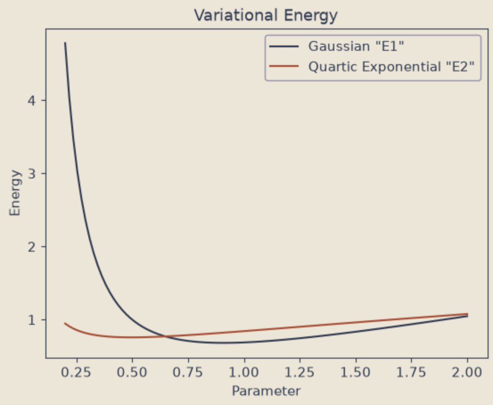

Schrödinger Equation
Explores how computational algorithms can approximate complex mathematical systems through simulation. By comparing Variational and Numerov methods for the Schrödinger equation, the project visualizes wavefunctions, convergence, and the relationship between numerical methods and physical models.
view code →